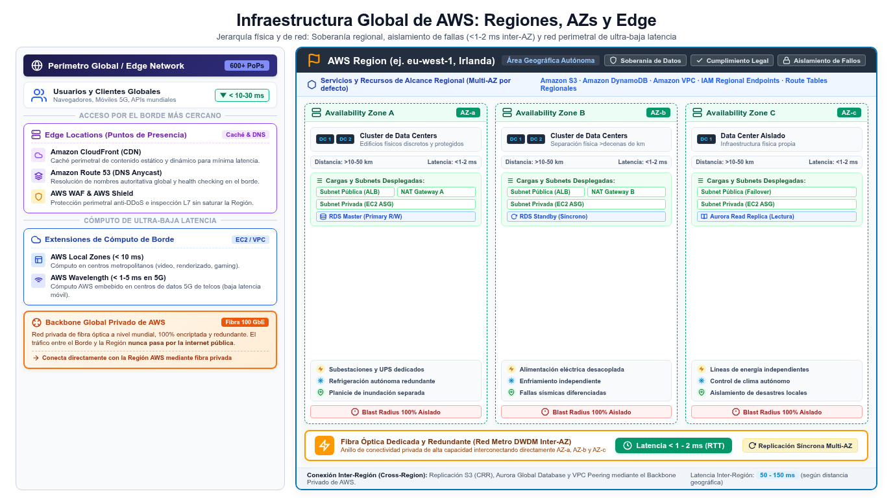

Cuenta AWS, regiones y Availability Zones AWS global infrastructure
El mapa físico y lógico sobre el que cae casi toda pregunta del SAA-C03: dónde viven tus recursos, cómo se aíslan entre sí y qué cuenta paga la factura.
Imagina AWS como una red de campus industriales repartida por el planeta. Tu cuenta AWS es el contrato que firmas con el propietario: define quién administra, qué se factura y dónde está la frontera lógica de tus recursos. Cada Region es una ciudad independiente con sus propios campus; dentro de cada ciudad hay varios barrios industriales aislados entre sí — las Availability Zones (AZs) — y en las afueras, cerca de los clientes, hay almacenes logísticos que acercan los productos: las edge locations. El examen no pregunta direcciones postales: pregunta decisiones — en qué Region despliegas por requisitos legales, en cuántas AZs repartes tus instancias por tolerancia a fallos y cómo organizas las cuentas para gobernar el conjunto.
El whitepaper Overview of Amazon Web Services (fuentes FND-01 y FND-02) resume la propuesta de valor oficial: AWS comenzó en 2006 ofreciendo infraestructura de IT como servicios web, hoy supera los 200 servicios disponibles on-demand en segundos con precios pay-as-you-go, y da servicio a cientos de miles de empresas en 190 países. La consecuencia de examen es directa: reemplazas gastos de capital fijos y anticipados por costes variables que escalan con el negocio — el argumento que justifica media sección del dominio de costes. Antes de diseñar nada, fija el vocabulario exacto en inglés: el enunciado dirá Region, Availability Zone y edge location sin traducirlos.

La cuenta AWS: la unidad de aislamiento, identidad y facturación
La cuenta es la frontera dura de todo lo que haces en AWS. Dentro de una cuenta viven tus recursos (VPCs, buckets S3, instancias EC2) y, por defecto, son invisibles para las demás cuentas: el aislamiento lógico es la regla, no la excepción. Cada cuenta nace con un único root user — la identidad todopoderosa que conviene proteger con MFA y reservar para emergencias — y a partir de ahí se crean usuarios, grupos y roles IAM bajo el principio de least privilege (la página de IAM desarrolla esa capa). Facturación e identidad van de la mano: la cuenta es la unidad que paga, y varias cuentas de una empresa pueden consolidarse bajo un único método de pago con AWS Organizations.
La best practice que el examen repite una y otra vez no es "una cuenta gigante", sino varias cuentas — por ejemplo, una por entorno (dev, prod) o por unidad de negocio — para limitar el blast radius de un incidente, separar límites de permisos y simplificar la segregación de cargas. AWS Organizations con sus SCPs y AWS Control Tower convierten ese modelo multi-cuenta en algo gobernable en lugar de un zoo administrativo; los detalles están en la página siguiente. Por ahora quédate con la idea-fuerza: cuenta = límite de facturación, límite de identidad y primer muro de aislamiento.
Regiones, AZs y edge locations: definiciones sin ambigüedad
Una Region es un área geográfica independiente que agrupa un conjunto de Availability Zones aisladas entre sí. Una AZ es uno o más data centers con energía, refrigeración y red redundantes, en ubicaciones físicas separadas e interconectadas con fibra de alta velocidad y baja latencia: la separación elimina modos de fallo compartidos (incendio, inundación, corte eléctrico) y la interconexión permite replicar datos y repartir tráfico a pocos milisegundos de distancia. Las edge locations y Points of Presence forman la periferia de la red global: allí terminan servicios como Amazon CloudFront (caché de contenido) y Route 53 (DNS), y desde ahí AWS Global Accelerator inyecta el tráfico hacia la red troncal de AWS.
Completan el mapa tres variantes de borde que conviene reconocer en los enunciados: AWS Local Zones extienden la Region con capacidad de cómputo a pocos kilómetros de grandes áreas metropolitanas; Wavelength Zones incrustan cómputo ultrabaja latencia en redes 5G de operadores; y Outposts instala racks físicos de infraestructura AWS dentro de tu propio data center para cargas que no pueden salir de las instalaciones. Los tres son "AWS fuera del campus", y el examen los usa como respuesta cuando aparece la palabra single-digit milliseconds o on-premises junto a servicios de AWS.
| Concepto | Qué es exactamente | Alcance | Palabra clave del enunciado |
|---|---|---|---|
| Region | Área geográfica independiente con varias AZs aisladas | Global: eliges una al crear cada recurso regional | compliance, data residency, latency, cost |
| Availability Zone | Uno o más data centers redundantes, separados físicamente y conectados con fibra de baja latencia | Dentro de una Region; una subnet vive en una sola AZ | highly available, fault tolerance, multi-AZ |
| Edge location / PoP | Punto de presencia donde se sirven CloudFront, Route 53 y el borde de Global Accelerator | Global, en decenas de ciudades (incluye zonas no Region) | cache, lowest latency, global users |
| Outposts · Local Zones · Wavelength | AWS en tu data center, junto a la metrópoli o en redes 5G | Extensiones de la Region | on-premises, single-digit ms latency, 5G |
Cómo elegir una Region: los cinco criterios de examen
El examen espera que elijas Region por criterios explícitos, nunca "la que sale por defecto". Primero, compliance y residencia de datos: si la regulación exige que los datos personales permanezcan en un territorio concreto, la Region viene impuesta y el resto de la arquitectura se adapta (por ejemplo, impidiendo réplicas cross-Region). Segundo, latencia: despliega cerca de tus usuarios; una aplicación cuyo público está en la península ibérica rinde mejor en eu-west-1 (Irlanda) que en Virginia, y una para el sudeste asiático va a ap-southeast-1. Tercero, coste: los precios de cómputo — y sobre todo la transferencia de datos — varían entre Regions, y ese diferencial puede cambiar la arquitectura elegida.
Cuarto, catálogo de servicios: no todos los servicios ni todas sus características están disponibles en todas las Regions, y algunos enunciados lo insinúan con frases como "a Region that supports this feature". Quinto, capacidad: en despliegues muy grandes conviene verificar que la Region puede absorber la demanda o repartirla entre varias. Estos criterios también operan en sentido inverso en el dominio de resiliencia: la arquitectura multi-Region (DR global, proximidad a usuarios) se justifica por latencia y tolerancia a desastres regionales, mientras que la mono-Region multi-AZ se justifica por simplicidad y coste.
pais o territorio concreto"} Q1 -->|"si"| A["Region con
residencia de datos"] Q1 -->|"no"| Q2{"Usuarios concentrados
en una zona"} Q2 -->|"si"| B["Region mas cercana
latencia minima"] Q2 -->|"distribuidos"| Q3{"Coste o catalogo
limita la eleccion"} Q3 -->|"si"| C["Comparar pricing
y servicios"] Q3 -->|"no"| D["Region estandar
del equipo"] classDef navy fill:#EFF6FF,stroke:#3B82F6,stroke-width:2px,color:#1E293B classDef green fill:#F0FDF4,stroke:#10B981,stroke-width:2px,color:#1E293B classDef amber fill:#FFF7ED,stroke:#F59E0B,stroke-width:2px,color:#1E293B class Q1,Q2,Q3 navy class A,B,D green class C amber
AZs y alta disponibilidad: el patrón multi-AZ
Las AZs son la unidad de fault tolerance del examen. Un despliegue multi-AZ replica recursos entre dos o más AZs de la misma Region: si una AZ falla, las demás siguen sirviendo tráfico. La regla práctica es tener cada capa con redundancia en al menos dos AZs — instancias detrás de un Application Load Balancer, subnets en AZs distintas, RDS multi-AZ con instancia standby en otra AZ. El examen formula esta necesidad como "highly available" o "tolerant to the failure of a single component", y la respuesta casi siempre es distribuir entre AZs, no encogerse a escalar verticalmente una única instancia.
Cuando el enunciado sube el listón a "region-wide failure", "natural disaster" o "disaster recovery strategy", la respuesta pasa de multi-AZ a multi-Region: copias de datos en otra Region (replicación cross-Region de S3, read replicas de RDS) y Route 53 conmutando entre endpoints regionales. Y cuando baja a la subred, recuerda la restricción estructural: una subnet reside íntegramente en una AZ y no puede abarcar dos, así que "spread across AZs" significa literalmente subnets distintas. La página de VPC convierte esta idea en el diagrama de arquitectura más repetido de todo el examen.
| Si el enunciado dice… | La respuesta apunta a… |
|---|---|
| "remains available if an Availability Zone fails" | Multi-AZ: subnets e instancias en ≥2 AZs de la misma Region |
| "users in Asia and Europe report high latency" | Region cercana o edge: CloudFront / Global Accelerator |
| "data must remain within the country" | Region con residencia de datos, sin réplicas cross-Region |
| "single-digit millisecond latency for metropolitan users" | AWS Local Zones |
| "run AWS services inside our own facility" | AWS Outposts |
| "avoid large upfront infrastructure expenses" | Cloud economics: pay-as-you-go y elasticidad |
- La cuenta es la unidad de facturación, identidad y aislamiento; el root user solo con MFA y para emergencias.
- El patrón corporativo es multi-cuenta (blast radius, permisos) con Organizations y facturación consolidada.
- Una Region agrupa varias AZs aisladas; se elige por compliance, latencia, coste, catálogo y capacidad.
- Una AZ es uno o más data centers separados e interconectados con fibra de baja latencia.
- Multi-AZ resuelve fallos de zona; multi-Region resuelve desastres regionales; la edge network resuelve latencia global.
- Local Zones, Wavelength y Outposts llevan AWS fuera del campus: metrópolis, 5G y tu data center.
- La nube sustituye capex por coste variable pay-as-you-go (200+ servicios, 190 países según el whitepaper oficial).
- FND-01 AWS Overview whitepaper — Introduction · docs.aws.amazon.com/whitepapers/latest/aws-overview/introduction.html
- FND-02 AWS Overview — AWS global infrastructure · docs.aws.amazon.com/whitepapers/latest/aws-overview/aws-global-infrastructure.html